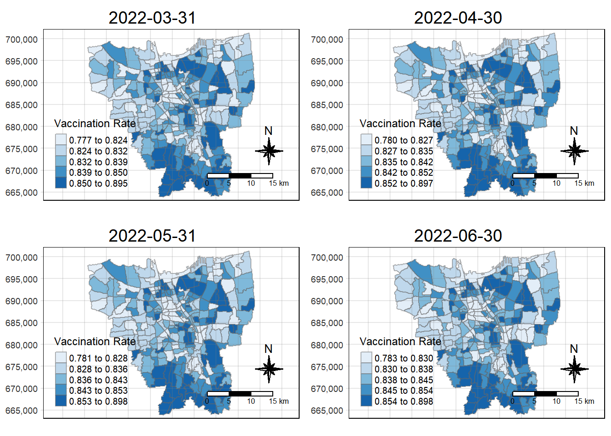
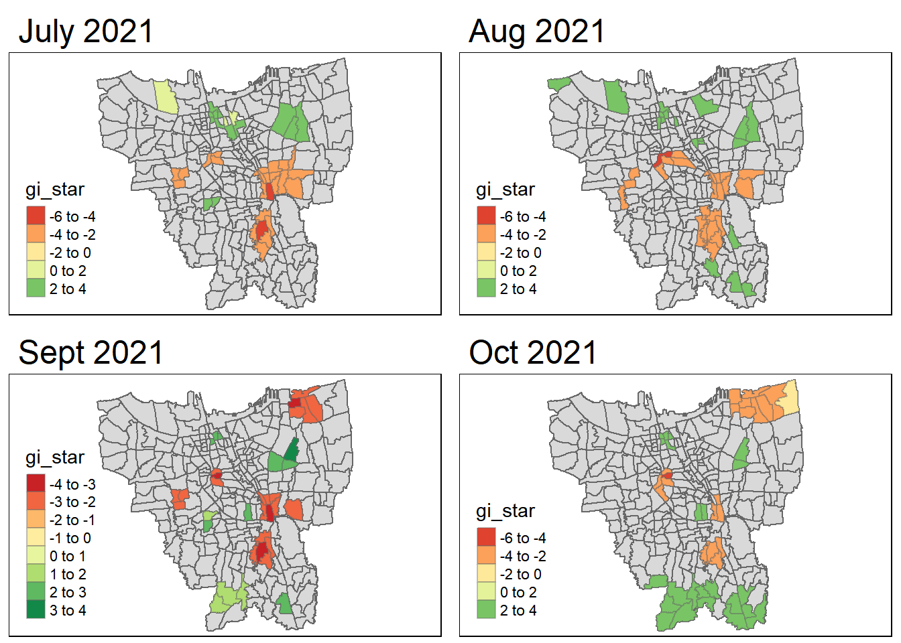
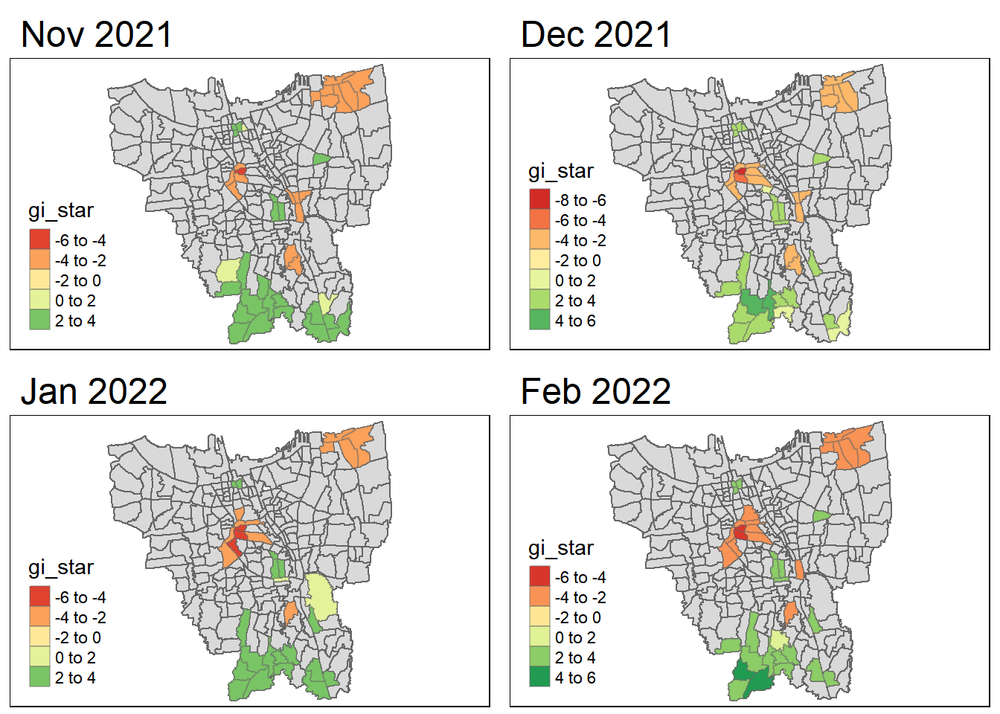

pacman::p_load(sf, sfdep, tmap, tidyverse, readxl, plotly)Take Home Exercise 2: Spatio-temporal Analysis of Vaccination Trends in DKI Jakarta
1 Setting the scene
Since late December 2019, an outbreak of a novel coronavirus disease (COVID-19; previously known as 2019-nCoV) was reported in Wuhan, China, which had subsequently affected 210 countries worldwide. In general, COVID-19 is an acute resolved disease but it can also be deadly, with a 2% case fatality rate.
The COVID-19 vaccination in Indonesia is an ongoing mass immunisation in response to the COVID-19 pandemic in Indonesia. On 13 January 2021, the program commenced when President Joko Widodo was vaccinated at the presidential palace. In terms of total doses given, Indonesia ranks third in Asia and fifth in the world.
According to wikipedia, as of 5 February 2023 at 18:00 WIB (UTC+7), 204,266,655 people had received the first dose of the vaccine and 175,131,893 people had been fully vaccinated; 69,597,474 of them had been inoculated with the booster or the third dose, while 1,585,164 had received the fourth dose. Jakarta has the highest percentage of population fully vaccinated with 103.46%, followed by Bali and Special Region of Yogyakarta with 85.45% and 83.02% respectively.
Despite its compactness, the cumulative vaccination rate are not evenly distributed within DKI Jakarta. The question is where are the sub-districts with relatively higher number of vaccination rate and how they changed over time.
2 Objectives
In this exercise, we will be applying appropriate Local Indicators of Spatial Association (LISA) and Emerging Hot Spot Analysis (EHSA) to undercover the spatio-temporal trends of COVID-19 vaccination in DKI Jakarta. In particular, the analysis we will be doing are:
Choropleth Mapping and Analysis
Local Gi* Analysis
Emerging Hotspot Analysis (EHSA)
3 Installing and Loading R packages
The Packages we will be using for this analysis are:
sf
tidyverse
tmap
sfdep
readxl
plotly
4 Data
| Type | Name | Description | Format |
|---|---|---|---|
| Geospatial | Shapefile (SHP) Batas Desa Provinsi DKI Jakarta | DKI Jakarta administration boundary 2019 | shapefile |
| Aspatial | Data Vaksinasi Berbasis Kelurahan | Daily vaccination data in DKI Jakarta from July 2021 to June 2022 | .xlsx |
We will take the vaccination rate data compiled on the last day of each month from July 2021 to June 2022 as required. Additional note, data from 28th February 2022 (last day of Feb) was not available so data from 27th February was used instead.
5 Data Wrangling for Geospatial Data
5.1 Importing Geosptial Data
Here, we will be using st_read to read the geospatial data and store the data into a dataframe called bd_jakarta.
bd_jakarta <- st_read(dsn="data/geospatial",
layer="BATAS_DESA_DESEMBER_2019_DUKCAPIL_DKI_JAKARTA")Reading layer `BATAS_DESA_DESEMBER_2019_DUKCAPIL_DKI_JAKARTA' from data source
`C:\gailteh\IS415-GAA\Take-home_Ex\Take-Home_Ex02\data\geospatial'
using driver `ESRI Shapefile'
Simple feature collection with 269 features and 161 fields
Geometry type: MULTIPOLYGON
Dimension: XY
Bounding box: xmin: 106.3831 ymin: -6.370815 xmax: 106.9728 ymax: -5.184322
Geodetic CRS: WGS 84Based on the output, things we can note:
- Geometry type is MULIPOLYGON
- Dataset has 269 features and 161 fields
- CRS is WGS 84
5.2 Checking and Transforming Coordinate system
Before proceeding, we need to ensure the data is in an appropriate coordinate system. Using st_crs() we can check the CRS of our datafram bd_jakarta.
st_crs(bd_jakarta)Coordinate Reference System:
User input: WGS 84
wkt:
GEOGCRS["WGS 84",
DATUM["World Geodetic System 1984",
ELLIPSOID["WGS 84",6378137,298.257223563,
LENGTHUNIT["metre",1]]],
PRIMEM["Greenwich",0,
ANGLEUNIT["degree",0.0174532925199433]],
CS[ellipsoidal,2],
AXIS["latitude",north,
ORDER[1],
ANGLEUNIT["degree",0.0174532925199433]],
AXIS["longitude",east,
ORDER[2],
ANGLEUNIT["degree",0.0174532925199433]],
ID["EPSG",4326]]From here, we can see that the assigned coordinate system is in WGS 84. Since the dataset is Indonesia centric, this is not an appropriate system to be using, hence we need to transform the CRS into Indonesia’s CRS, DGN95 with EPSG code 23845. We can do this using st_transform().
bd_jakarta <- st_transform(bd_jakarta, 23845)Checking the CRS again,
st_crs(bd_jakarta)Coordinate Reference System:
User input: EPSG:23845
wkt:
PROJCRS["DGN95 / Indonesia TM-3 zone 54.1",
BASEGEOGCRS["DGN95",
DATUM["Datum Geodesi Nasional 1995",
ELLIPSOID["WGS 84",6378137,298.257223563,
LENGTHUNIT["metre",1]]],
PRIMEM["Greenwich",0,
ANGLEUNIT["degree",0.0174532925199433]],
ID["EPSG",4755]],
CONVERSION["Indonesia TM-3 zone 54.1",
METHOD["Transverse Mercator",
ID["EPSG",9807]],
PARAMETER["Latitude of natural origin",0,
ANGLEUNIT["degree",0.0174532925199433],
ID["EPSG",8801]],
PARAMETER["Longitude of natural origin",139.5,
ANGLEUNIT["degree",0.0174532925199433],
ID["EPSG",8802]],
PARAMETER["Scale factor at natural origin",0.9999,
SCALEUNIT["unity",1],
ID["EPSG",8805]],
PARAMETER["False easting",200000,
LENGTHUNIT["metre",1],
ID["EPSG",8806]],
PARAMETER["False northing",1500000,
LENGTHUNIT["metre",1],
ID["EPSG",8807]]],
CS[Cartesian,2],
AXIS["easting (X)",east,
ORDER[1],
LENGTHUNIT["metre",1]],
AXIS["northing (Y)",north,
ORDER[2],
LENGTHUNIT["metre",1]],
USAGE[
SCOPE["Cadastre."],
AREA["Indonesia - onshore east of 138°E."],
BBOX[-9.19,138,-1.49,141.01]],
ID["EPSG",23845]]Now it’s in the appropriate CRS!
5.3 Removing Outer Islands
First, we should visualise how the data looks.
plot(bd_jakarta$geometry)
bd_jakarta includes both the mainland and outer islands. As required by the assignment, we need to exclude the outer islands as we will not need them for out analysis.
Some particular fields we should note are: PROVINSI (Province), KAB_KOTA (City), KECAMATAN (District) and DESA_KELUR (Village). Of all these fields, we should look further into KAB_KOTA as it’s the next highest level of distinction within the province of Jakarta.
unique(bd_jakarta$"KAB_KOTA")[1] "JAKARTA BARAT" "JAKARTA PUSAT" "KEPULAUAN SERIBU" "JAKARTA UTARA"
[5] "JAKARTA TIMUR" "JAKARTA SELATAN" NA All cities within Jakarta have the prefix “Jakarta”, while KEPULAUAN SERIBU (“Thousand Islands” in English) is referring to the outer islands. Now we can remove the outer islands after identifying them.
bd_jakarta <- filter(bd_jakarta, KAB_KOTA != "KEPULAUAN SERIBU")5.4 Retaining first 9 fields
We are also required to retain the first 9 fields, we will use select() to extract out columns 1-9.
bd_jakarta <- bd_jakarta %>% select(1:9)5.5 Renaming Columns
For easy comprehension in the future, we can translate the column names into English.
bd_jakarta <- bd_jakarta %>%
rename(
Object_ID=OBJECT_ID,
Province=PROVINSI,
City=KAB_KOTA,
District=KECAMATAN,
Village_Code=KODE_DESA,
Village=DESA,
Sub_District=DESA_KELUR,
Code=KODE,
Total_Population=JUMLAH_PEN
)6 Data Wrangling for Aspatial Data
6.1 Pre-Importing EDA
As we have multiple .xlsx files in our aspatial data folder (from July 2021 - June 2022), we should compile all the data together. Before doing so, we should perform EDA, to understand the data.
#reading 31st July 2021 file and store it into a dataframe
july2021 <- read_xlsx("data/aspatial/Vaccination 31 Juli 2021 Jakarta.xlsx")
glimpse(july2021)Rows: 268
Columns: 27
$ `KODE KELURAHAN` <chr> NA, "3172051003", "317304…
$ `WILAYAH KOTA` <chr> NA, "JAKARTA UTARA", "JAK…
$ KECAMATAN <chr> NA, "PADEMANGAN", "TAMBOR…
$ KELURAHAN <chr> "TOTAL", "ANCOL", "ANGKE"…
$ SASARAN <dbl> 8941211, 23947, 29381, 29…
$ `BELUM VAKSIN` <dbl> 4441501, 12333, 13875, 18…
$ `JUMLAH\r\nDOSIS 1` <dbl> 4499710, 11614, 15506, 10…
$ `JUMLAH\r\nDOSIS 2` <dbl> 1663218, 4181, 4798, 3658…
$ `TOTAL VAKSIN\r\nDIBERIKAN` <dbl> 6162928, 15795, 20304, 14…
$ `LANSIA\r\nDOSIS 1` <dbl> 502579, 1230, 2012, 865, …
$ `LANSIA\r\nDOSIS 2` <dbl> 440910, 1069, 1729, 701, …
$ `LANSIA TOTAL \r\nVAKSIN DIBERIKAN` <dbl> 943489, 2299, 3741, 1566,…
$ `PELAYAN PUBLIK\r\nDOSIS 1` <dbl> 1052883, 3333, 2586, 2837…
$ `PELAYAN PUBLIK\r\nDOSIS 2` <dbl> 666009, 2158, 1374, 1761,…
$ `PELAYAN PUBLIK TOTAL\r\nVAKSIN DIBERIKAN` <dbl> 1718892, 5491, 3960, 4598…
$ `GOTONG ROYONG\r\nDOSIS 1` <dbl> 56660, 78, 122, 174, 71, …
$ `GOTONG ROYONG\r\nDOSIS 2` <dbl> 38496, 51, 84, 106, 57, 7…
$ `GOTONG ROYONG TOTAL\r\nVAKSIN DIBERIKAN` <dbl> 95156, 129, 206, 280, 128…
$ `TENAGA KESEHATAN\r\nDOSIS 1` <dbl> 76397, 101, 90, 215, 73, …
$ `TENAGA KESEHATAN\r\nDOSIS 2` <dbl> 67484, 91, 82, 192, 67, 3…
$ `TENAGA KESEHATAN TOTAL\r\nVAKSIN DIBERIKAN` <dbl> 143881, 192, 172, 407, 14…
$ `TAHAPAN 3\r\nDOSIS 1` <dbl> 2279398, 5506, 9012, 5408…
$ `TAHAPAN 3\r\nDOSIS 2` <dbl> 446028, 789, 1519, 897, 4…
$ `TAHAPAN 3 TOTAL\r\nVAKSIN DIBERIKAN` <dbl> 2725426, 6295, 10531, 630…
$ `REMAJA\r\nDOSIS 1` <dbl> 531793, 1366, 1684, 1261,…
$ `REMAJA\r\nDOSIS 2` <dbl> 4291, 23, 10, 1, 1, 8, 6,…
$ `REMAJA TOTAL\r\nVAKSIN DIBERIKAN` <dbl> 536084, 1389, 1694, 1262,…There are no duplicates in the dataframes, and it has 27 columns.
6.2 Craeting an Aspatial Data Pre-processing Function
For our aspatial data, we will only require certain columns to focus on in our analysis:
- Wilayah Kota (City)
- Kecamatan (District)
- Kelurahan (Sub-district)
- Sasaran (Target number of people to vaccinate)
- Belum Vaksin (Number of people yet to be Vaccinated)
We need to create and extra date column containing the month and year of the observation (e.g. 31 July 2021).
We will do this by creating a function that will import the files into 1 data frame, retaining the necessary columns and then adding the date column.
#taking in filepath of aspatial data
aspatial_preprocess <- function(filepath){
# reading the xlsx file
result_file <- read_xlsx(filepath)
# creating the date column
# currently the files are named as: Vaccination DD Month YYYY Jarkarta
# Start point: Vaccination, End point: Jakarta (use [[1]] to indicate first element in the list)
# we will be loading the date it as DD-Month-YYYY format
startpoint <- gregexpr(pattern = "Vaccination", filepath)[[1]] + 12
endpoint <- gregexpr(pattern = "Jakarta", filepath)[[1]] -2
result_file$Date <- substr(filepath, startpoint, endpoint)
# Retaining relevant Columns
result_file <- result_file %>%
select("Date",
"WILAYAH KOTA",
"KECAMATAN",
"KELURAHAN",
"SASARAN",
"BELUM VAKSIN")
return(result_file)
}6.3 Feeding Files into aspatial_preprocess function
After creating the function to preprocess asptial data, we now can feed the files into it. It can be done manually, but we can use list.files() and lapply() to make the process shorter.
What the code does: In the folder ‘data/aspatial’, it find files with the extension ‘.xlsx’ and adds it to our fileslist. The full.names=TRUE prepends the directory path to the file names, giving a relative file path - otherwise, only the file names (not the paths) would be returned. After that, for every element in fileslist, we apply the aspatial_process function created earlier.
fileslist <- list.files(path = "data/aspatial", pattern = "*.xlsx", full.names = TRUE)
dflist <- lapply(seq_along(fileslist), function(x) aspatial_preprocess(fileslist[x]))Now, we need to convert dflist into a dataframe using ldply().
vaccine_jkt <- plyr::ldply(dflist, data.frame)Checking what the dataframe looks like and making sure the columns are correct:
glimpse(vaccine_jkt)Rows: 3,216
Columns: 6
$ Date <chr> "27 Februari 2022", "27 Februari 2022", "27 Februari 2022…
$ WILAYAH.KOTA <chr> NA, "JAKARTA UTARA", "JAKARTA BARAT", "JAKARTA TIMUR", "J…
$ KECAMATAN <chr> NA, "PADEMANGAN", "TAMBORA", "KRAMAT JATI", "JATINEGARA",…
$ KELURAHAN <chr> "TOTAL", "ANCOL", "ANGKE", "BALE KAMBANG", "BALI MESTER",…
$ SASARAN <dbl> 8941211, 23947, 29381, 29074, 9752, 26285, 21566, 23886, …
$ BELUM.VAKSIN <dbl> 1517196, 4592, 5319, 5903, 1649, 4030, 3950, 3344, 9382, …6.4 Formatting Date Column
The values in the Date column are in string format since they were derived from substrings. We need to convert it into datetime.
# parses the 'Date' column into Month(Full Name)-YYYY datetime objects
# locale="ind" means that the locale has been set as Indonesia
Sys.setlocale(locale="ind")[1] "LC_COLLATE=Indonesian_Indonesia.1252;LC_CTYPE=Indonesian_Indonesia.1252;LC_MONETARY=Indonesian_Indonesia.1252;LC_NUMERIC=C;LC_TIME=Indonesian_Indonesia.1252"vaccine_jkt$Date <- c(vaccine_jkt$Date) %>%
as.Date(vaccine_jkt$Date, format = "%d %B %Y")
glimpse(vaccine_jkt)Rows: 3,216
Columns: 6
$ Date <date> 2022-02-27, 2022-02-27, 2022-02-27, 2022-02-27, 2022-02-~
$ WILAYAH.KOTA <chr> NA, "JAKARTA UTARA", "JAKARTA BARAT", "JAKARTA TIMUR", "J~
$ KECAMATAN <chr> NA, "PADEMANGAN", "TAMBORA", "KRAMAT JATI", "JATINEGARA",~
$ KELURAHAN <chr> "TOTAL", "ANCOL", "ANGKE", "BALE KAMBANG", "BALI MESTER",~
$ SASARAN <dbl> 8941211, 23947, 29381, 29074, 9752, 26285, 21566, 23886, ~
$ BELUM.VAKSIN <dbl> 1517196, 4592, 5319, 5903, 1649, 4030, 3950, 3344, 9382, ~6.5 Renaming Columns
Similar to the Geospatial Data, we will be renaming the columns into English again.
vaccine_jkt <- vaccine_jkt %>%
rename(
Date=Date,
City = WILAYAH.KOTA,
District = KECAMATAN,
Sub_District = KELURAHAN,
Target = SASARAN,
Yet_to_vaccine = BELUM.VAKSIN
)6.6 Further Data Processing
We want to remove records from the outer islands (for those where the city value is “KAB.ADM.KEP.SERIBU”).
vaccine_jkt <- filter(vaccine_jkt, City != "KAB.ADM.KEP.SERIBU")7 Joining Geospatial and Aspatial Data
7.1 Preliminary EDA
Now we will be joining both the geospatial and aspatial data frames together. First, let’s look for common fields between both data frames.
Column names of Geospatial data (bd_jakarta):
colnames(bd_jakarta) [1] "Object_ID" "Village_Code" "Village" "Code"
[5] "Province" "City" "District" "Sub_District"
[9] "Total_Population" "geometry" Column names of Aspatial Data (vaccine_jkt):
colnames(vaccine_jkt)[1] "Date" "City" "District" "Sub_District"
[5] "Target" "Yet_to_vaccine"From this, we can see City, District, Sub_District should match up. We can join the data frames based on those.
combined_jkt <- left_join(bd_jakarta, vaccine_jkt,
by=c(
"City" = "City",
"District" = "District",
"Sub_District" = "Sub_District")
)Visualising current data:
target_vaccine <- tm_shape(combined_jkt) +
tm_borders(alpha = 0.5) +
tm_fill("Target")
yet_to_vaccine <- tm_shape(combined_jkt) +
tm_borders(alpha = 0.5) +
tm_fill("Yet_to_vaccine")
tmap_arrange(target_vaccine, yet_to_vaccine)As we can see, there are areas with missing values. Most likely this is cased by mismatched records, for example the names of the cities/districts/sub_districts do not match within the 2 data frames. We need to adjust them to fix this issue.
7.2 Identifying Mismatched Records
Upon further comparison of the geospatial and aspatial data, we find that the mismatch is in the Sub_Districts field.
Here, we will be checking for unique values of Sub_Distric in vaccine_jkt that are not already present in bd_jakarta and vice versa.
vaccine_subdistrict <- c(vaccine_jkt$Sub_District)
bd_subdistrict <- c(bd_jakarta$Sub_District)
unique(vaccine_subdistrict[!(vaccine_subdistrict %in% bd_subdistrict)])[1] "BALE KAMBANG" "HALIM PERDANA KUSUMAH" "JATI PULO"
[4] "KAMPUNG TENGAH" "KERENDANG" "KRAMAT JATI"
[7] "PAL MERIAM" "PINANG RANTI" "RAWA JATI" unique(bd_subdistrict[!(bd_subdistrict %in% vaccine_subdistrict)])[1] "KRENDANG" "RAWAJATI" "TENGAH"
[4] "BALEKAMBANG" "PINANGRANTI" "JATIPULO"
[7] "PALMERIAM" "KRAMATJATI" "HALIM PERDANA KUSUMA"Summary of the mismatched records
| Aspatial (vaccine_jkt) | Geospatial (bd_jakarta) |
|---|---|
| BALE KAMBANG | BALEKAMBANG |
| HALIM PERDANA KUSUMAH | HALIM PERDANA KUSUMA |
| JATI PULO | JATIPULO |
| KAMPUNG TENGAH | TENGAH |
| KERENDANG | KRENDANG |
| KRAMAT JATI | KRAMATJATI |
| PAL MERIAM | PALMERIAN |
| PINANG RANTI | PINANGRANTI |
| RAWA JATI | RAWAJATI |
7.3 Renaming Mismatched Records
Now, we need to fix the mismatches by renaming them
# where bd_jakarta is a mismatched value, replace with the correct value
bd_jakarta$Sub_District[bd_jakarta$Sub_District == 'BALEKAMBANG'] <- 'BALE KAMBANG'
bd_jakarta$Sub_District[bd_jakarta$Sub_District == 'HALIM PERDANA KUSUMA'] <- 'HALIM PERDANA KUSUMAH'
bd_jakarta$Sub_District[bd_jakarta$Sub_District == 'JATIPULO'] <- 'JATI PULO'
bd_jakarta$Sub_District[bd_jakarta$Sub_District == 'TENGAH'] <- 'KAMPUNG TENGAH'
bd_jakarta$Sub_District[bd_jakarta$Sub_District == 'KRAMATJATI'] <- 'KRAMAT JATI'
bd_jakarta$Sub_District[bd_jakarta$Sub_District == 'KRENDANG'] <- 'KERENDANG'
bd_jakarta$Sub_District[bd_jakarta$Sub_District == 'PALMERIAM'] <- 'PAL MERIAM'
bd_jakarta$Sub_District[bd_jakarta$Sub_District == 'PINANGRANTI'] <- 'PINANG RANTI'
bd_jakarta$Sub_District[bd_jakarta$Sub_District == 'RAWAJATI'] <- 'RAWA JATI'7.4 Joining
We can join the geospatial and aspatial dataframes again since we have a standardised common identifier amoung both. We will be joining vaccine_jkt to bd_jakarta using Sub_District.
combined_jkt <- left_join(bd_jakarta, vaccine_jkt,
by=c("Sub_District" = "Sub_District"))Visualising the data again:
target_vaccine_update <- tm_shape(combined_jkt) +
tm_borders(alpha = 0.5) +
tm_fill("Target")
yet_to_vaccine_update <- tm_shape(combined_jkt) +
tm_borders(alpha = 0.5) +
tm_fill("Yet_to_vaccine")
tmap_arrange(target_vaccine_update, yet_to_vaccine_update)Now we can start on our analysis.
8 Computing Monthly Vaccination Rate
As required by the exercise, we have to calculate the monthly vaccination rate from July 2021 to June 2022 at sub-district level. The vaccination rate is the number of vaccines/total vaccines given. We do this this by summing the number of vaccinated people (based on sub-district and date) and then dividing it by the total population. Based on our data, we can get the number of vaccinated by subtracting Yet_to_vaccine from Target.
vaccine_rate <- vaccine_jkt %>%
inner_join(bd_jakarta, by=c("Sub_District" = "Sub_District")) %>%
group_by(Sub_District, Date) %>%
summarise(`vaccination_rate` = (Target - Yet_to_vaccine)/Target)glimpse(vaccine_rate)Rows: 3,132
Columns: 3
Groups: Sub_District [261]
$ Sub_District <chr> "ANCOL", "ANCOL", "ANCOL", "ANCOL", "ANCOL", "ANCOL",~
$ Date <date> 2021-07-31, 2021-08-31, 2021-09-30, 2021-10-31, 2021~
$ vaccination_rate <dbl> 0.4849877, 0.6161941, 0.7207166, 0.7498225, 0.7691986~vaccine_rate_pivot <- vaccine_rate %>% ungroup() %>% pivot_wider(names_from = Date, values_from = vaccination_rate)Here is a part of the dataframe of the vaccination rates by subdistrict for each month.
9 Mapping Monthly Vaccination Rate
Now that we have computed the monthly vaccination rate at sub-district level, now we are required to plot monthly vaccination rate maps. Before doing so, we need to convert the dataframes into sf objects.
combined_jkt <- st_as_sf(combined_jkt)
vaccine_rate_pivot <- vaccine_rate_pivot %>% left_join(bd_jakarta, by=c("Sub_District" = "Sub_District"))
vaccine_rate_pivot <- st_as_sf(vaccine_rate_pivot)As we need to plot the maps for each month, we should create a helper function so that we do not need to keep re-typing the code over again.
map_function <- function(df, varname) {
tm_shape(df) +
tm_fill(varname,
style = "quantile",
palette = "Blues",
title = "Vaccination Rate") +
tm_layout(main.title = varname,
main.title.position = "center",
main.title.size = 1.2,
legend.height = 0.45,
legend.width = 0.35,
frame = TRUE) +
tm_borders(alpha = 0.5) +
tm_compass(type = "8star", size = 2) +
tm_scale_bar() +
tm_grid(alpha = 0.2)
}Show the code
tmap_mode("plot")
tmap_arrange(map_function(vaccine_rate_pivot, "2021-07-31"),
map_function(vaccine_rate_pivot, "2021-08-31"),
map_function(vaccine_rate_pivot, "2021-09-30"),
map_function(vaccine_rate_pivot, "2021-10-31"))Show the code
tmap_arrange(map_function(vaccine_rate_pivot, "2021-11-30"),
map_function(vaccine_rate_pivot, "2021-12-31"),
map_function(vaccine_rate_pivot, "2022-01-31"),
map_function(vaccine_rate_pivot, "2022-02-27"))Show the code
tmap_arrange(map_function(vaccine_rate_pivot, "2022-03-31"),
map_function(vaccine_rate_pivot, "2022-04-30"),
map_function(vaccine_rate_pivot, "2022-05-31"),
map_function(vaccine_rate_pivot, "2022-06-30"))
9.1 Spatial Pattern Description
The darker the shade of blue, the higher the vaccination rate. For the whole of Jakarta, the vaccination rates generally increase over time due to consistent vaccination efforts by the government. Since the first month of observation, the southern area seems to have a small cluster of higher vaccination rates as indicated by the darker shade of blue. As the months go by, the sub-districts located at the south of Jakarta continue to have a higher vaccination rates compared to the other sub-districts.
10 Local Gi* Analysis
In this next section, we will be doing Hot Spot and Cold Spot analysis to identify hotspots/ coldspots using Getis and Ord’s G-statistics. It looks at neighbours within a defined proximity to identify where either high or low values cluster spatially.
There are 3 steps to this analysis: - Deriving spatial weight matrix - Computing Gi statistics - Mapping Gi statistics
First, we will derive the contiguity weights using the Queen’s Method, using the sfdep package
set.seed(1234)wm_idw <- vaccine_rate_pivot %>%
mutate(nb = st_contiguity(geometry),
wts = st_inverse_distance(nb, geometry, scale = 1, alpha = 1),
.before = 1)Next we will compute the Gi* values of the vaccination rates for each month.
Show the code
HCSA_july2021 <- wm_idw %>%
mutate(local_Gi = local_gstar_perm(
`2021-07-31`, nb, wt, nsim = 99),
.before = 1) %>%
unnest(local_Gi)
HCSA_aug2021 <- wm_idw %>%
mutate(local_Gi = local_gstar_perm(
`2021-08-31`, nb, wt, nsim = 99),
.before = 1) %>%
unnest(local_Gi)
HCSA_sept2021 <- wm_idw %>%
mutate(local_Gi = local_gstar_perm(
`2021-09-30`, nb, wt, nsim = 99),
.before = 1) %>%
unnest(local_Gi)
HCSA_oct2021 <- wm_idw %>%
mutate(local_Gi = local_gstar_perm(
`2021-10-31`, nb, wt, nsim = 99),
.before = 1) %>%
unnest(local_Gi)
HCSA_nov2021 <- wm_idw %>%
mutate(local_Gi = local_gstar_perm(
`2021-11-30`, nb, wt, nsim = 99),
.before = 1) %>%
unnest(local_Gi)
HCSA_dec2021 <- wm_idw %>%
mutate(local_Gi = local_gstar_perm(
`2021-12-31`, nb, wt, nsim = 99),
.before = 1) %>%
unnest(local_Gi)
HCSA_jan2022 <- wm_idw %>%
mutate(local_Gi = local_gstar_perm(
`2022-01-31`, nb, wt, nsim = 99),
.before = 1) %>%
unnest(local_Gi)
HCSA_feb2022 <- wm_idw %>%
mutate(local_Gi = local_gstar_perm(
`2022-02-27`, nb, wt, nsim = 99),
.before = 1) %>%
unnest(local_Gi)
HCSA_mar2022 <- wm_idw %>%
mutate(local_Gi = local_gstar_perm(
`2022-03-31`, nb, wt, nsim = 99),
.before = 1) %>%
unnest(local_Gi)
HCSA_april2022 <- wm_idw %>%
mutate(local_Gi = local_gstar_perm(
`2022-04-30`, nb, wt, nsim = 99),
.before = 1) %>%
unnest(local_Gi)
HCSA_may2022 <- wm_idw %>%
mutate(local_Gi = local_gstar_perm(
`2022-05-31`, nb, wt, nsim = 99),
.before = 1) %>%
unnest(local_Gi)
HCSA_june2022 <- wm_idw %>%
mutate(local_Gi = local_gstar_perm(
`2022-06-30`, nb, wt, nsim = 99),
.before = 1) %>%
unnest(local_Gi)Finally, we will create map objects of the Gi* map, then plot the maps. For each map, we will only display the significant hot and cold spot areas (i.e. those with p-values less than 0.05).
Show the code
#July 2021
HCSA_july2021_sig <- HCSA_july2021 %>%
filter(p_sim < 0.05)
HCSA_july2021_map <- tm_shape(HCSA_july2021) +
tm_polygons() +
tm_borders(alpha = 0.5) +
tm_shape(HCSA_july2021_sig) +
tm_fill("gi_star") +
tm_borders(alpha = 0.4) +
tm_layout(main.title = "July 2021")
#Aug 2021
HCSA_aug2021_sig <- HCSA_aug2021 %>%
filter(p_sim < 0.05)
HCSA_aug2021_map <-tm_shape(HCSA_aug2021) +
tm_polygons() +
tm_borders(alpha = 0.5) +
tm_shape(HCSA_aug2021_sig) +
tm_fill("gi_star") +
tm_borders(alpha = 0.4) +
tm_layout(main.title = "Aug 2021")
#Sept 2021
HCSA_sept2021_sig <- HCSA_sept2021 %>%
filter(p_sim < 0.05)
HCSA_sept2021_map <- tm_shape(HCSA_sept2021) +
tm_polygons() +
tm_borders(alpha = 0.5) +
tm_shape(HCSA_sept2021_sig) +
tm_fill("gi_star") +
tm_borders(alpha = 0.4) +
tm_layout(main.title = "Sept 2021")
#Oct 2021
HCSA_oct2021_sig <- HCSA_oct2021 %>%
filter(p_sim < 0.05)
HCSA_oct2021_map <-tm_shape(HCSA_oct2021) +
tm_polygons() +
tm_borders(alpha = 0.5) +
tm_shape(HCSA_oct2021_sig) +
tm_fill("gi_star") +
tm_borders(alpha = 0.4) +
tm_layout(main.title = "Oct 2021")
# Nov 2021
HCSA_nov2021_sig <- HCSA_nov2021 %>%
filter(p_sim < 0.05)
HCSA_nov2021_map <-tm_shape(HCSA_nov2021) +
tm_polygons() +
tm_borders(alpha = 0.5) +
tm_shape(HCSA_nov2021_sig) +
tm_fill("gi_star") +
tm_borders(alpha = 0.4) +
tm_layout(main.title = "Nov 2021")
# Dec 2021
HCSA_dec2021_sig <- HCSA_dec2021 %>%
filter(p_sim < 0.05)
HCSA_dec2021_map <-tm_shape(HCSA_dec2021) +
tm_polygons() +
tm_borders(alpha = 0.5) +
tm_shape(HCSA_dec2021_sig) +
tm_fill("gi_star") +
tm_borders(alpha = 0.4) +
tm_layout(main.title = "Dec 2021")
# Jan 2022
HCSA_jan2022_sig <- HCSA_jan2022 %>%
filter(p_sim < 0.05)
HCSA_jan2022_map <- tm_shape(HCSA_jan2022) +
tm_polygons() +
tm_borders(alpha = 0.5) +
tm_shape(HCSA_jan2022_sig) +
tm_fill("gi_star") +
tm_borders(alpha = 0.4) +
tm_layout(main.title = "Jan 2022")
# Fen 2022
HCSA_feb2022_sig <- HCSA_feb2022 %>%
filter(p_sim < 0.05)
HCSA_feb_2022_map <- tm_shape(HCSA_feb2022) +
tm_polygons() +
tm_borders(alpha = 0.5) +
tm_shape(HCSA_feb2022_sig) +
tm_fill("gi_star") +
tm_borders(alpha = 0.4) +
tm_layout(main.title = "Feb 2022")
# Mar 2022
HCSA_mar2022_sig <- HCSA_mar2022 %>%
filter(p_sim < 0.05)
HCSA_mar2022_map <- tm_shape(HCSA_mar2022) +
tm_polygons() +
tm_borders(alpha = 0.5) +
tm_shape(HCSA_mar2022_sig) +
tm_fill("gi_star") +
tm_borders(alpha = 0.4) +
tm_layout(main.title = "Mar 2022")
#April 2022
HCSA_april2022_sig <- HCSA_april2022 %>%
filter(p_sim < 0.05)
HCSA_april2022_map <- tm_shape(HCSA_april2022) +
tm_polygons() +
tm_borders(alpha = 0.5) +
tm_shape(HCSA_april2022_sig) +
tm_fill("gi_star") +
tm_borders(alpha = 0.4) +
tm_layout(main.title = "April 2022")
# May 2022
HCSA_may2022_sig <- HCSA_may2022 %>%
filter(p_sim < 0.05)
HCSA_may2022_map <- tm_shape(HCSA_may2022) +
tm_polygons() +
tm_borders(alpha = 0.5) +
tm_shape(HCSA_may2022_sig) +
tm_fill("gi_star") +
tm_borders(alpha = 0.4) +
tm_layout(main.title = "May 2022")
# June 2022
HCSA_june2022_sig <- HCSA_june2022 %>%
filter(p_sim < 0.05)
HCSA_june2022_map <- tm_shape(HCSA_june2022) +
tm_polygons() +
tm_borders(alpha = 0.5) +
tm_shape(HCSA_june2022_sig) +
tm_fill("gi_star") +
tm_borders(alpha = 0.4) +
tm_layout(main.title = "Jun 2022")Plotting the Gi* maps:
Show the code
tmap_arrange(HCSA_july2021_map, HCSA_aug2021_map, HCSA_sept2021_map, HCSA_oct2021_map)
Show the code
tmap_arrange(HCSA_nov2021_map, HCSA_dec2021_map, HCSA_jan2022_map, HCSA_feb_2022_map)
Show the code
tmap_arrange(HCSA_mar2022_map, HCSA_april2022_map, HCSA_may2022_map, HCSA_june2022_map)10.1 Statistical Conclusions
The hot spot areas are represented by the green areas, indicating that a subdistrict is associated with high vaccination rates in the neighbouring sub-districts. On the other hand, cold spot areas are represented by the red areas, indicating that a sub-district is associated with low vaccination rates in the neighbouring sub-districts.
In the first 3 months of the study period (July 2021 to Oct 2021), we notice that there is a few hotspots close to the Northern part of Jakarta. From October onwards we can see that there is a new and big hotspot forming at the South of Jakarta. From this we can infer that the sub-districts in the southern parts of Jakarta have a higher vaccination rate than the other parts of Jakarta.
11 Emerging Hotspot Analysis (EHSA)
In this section, we will be conducting EHSA analysis on the monthly vaccination rates. EHSA is a spatio-temporal analysis method used to reveal and describe how hotspot and coldspots evolve over time. There are 4 main steps to this analysis:
- Building a space-time cube
- Calculating Getis-Ord local Gi* statistics for each bin using FDR correction
- Evaluating host and cold spot trends using Mann-Kendall trend test
- Categorising each study area location by referring to the resultant trend z-score and p-value for each location with data, and with the hot spot z-score and p-value for each bin.
11.1 Building a time series cube
spacetime() of sfdep used used to create an spatio-temporal cube. After which is_spacetime_cube() is used to verify if the spatio-temporal cube create is indeed a space-time cube object.
vaccine_rate_st <- spacetime(vaccine_rate, bd_jakarta,
.loc_col = "Sub_District",
.time_col = "Date")
vaccine_rate_st# A tibble: 3,132 x 3
# Groups: Sub_District [261]
Sub_District Date vaccination_rate
* <chr> <date> <dbl>
1 ANCOL 2021-07-31 0.485
2 ANCOL 2021-08-31 0.616
3 ANCOL 2021-09-30 0.721
4 ANCOL 2021-10-31 0.750
5 ANCOL 2021-11-30 0.769
6 ANCOL 2021-12-31 0.789
7 ANCOL 2022-01-31 0.806
8 ANCOL 2022-02-27 0.808
9 ANCOL 2022-03-31 0.811
10 ANCOL 2022-04-30 0.814
# ... with 3,122 more rowsTesting if an object is a spacetime cube:
is_spacetime_cube(vaccine_rate_st)[1] TRUEThe TRUE output indicates that vaccine_rate_st is space-time cube.
11.2 Deriving Spatial Weights
Next we will compute the local Gi* statistics. We will derive the spatial weights by identifying the contiguity neighbours list and then deriving the inverse distance weights.
# vaccine_nb <- vaccine_rate_st %>%
# activate("geometry") %>%
# mutate(nb = include_self(st_contiguity(geometry)),
# wt = st_inverse_distance(nb, geometry,
# scale = 1,
# alpha = 1),
# .before = 1)%>%
# set_wts("wt") %>%
# set_nbs("nb")
#
# head(vaccine_nb)11.3 Computing local Gi*
We can use these new columns to manually calculate the local Gi* for each location. We can do this by grouping by Date and using local_gstar_perm() of sfdep package. After which, we use unnest() to unnest gi_star column of the newly created gi_starts data frame.
# gi_stars <- vaccine_nb %>%
# group_by(`Date`) %>%
# mutate(gi_star = local_gstar_perm(
# vaccine_rate, nb, wt)) %>%
# tidyr::unnest(gi_star)
#
# gi_stars11.4 Mann Kendall Test
Now, we will conduct the Mann-Kendall test on 3 selected sub-districts. To decide which sub-districts to pick, we can check the highest vaccination rate at the end of the study period.
june_rate <- vaccine_rate %>%
filter(Date == as.Date("2022-06-30"))%>%
arrange(desc(`vaccination_rate`))
head(june_rate)# A tibble: 6 x 3
# Groups: Sub_District [6]
Sub_District Date vaccination_rate
<chr> <date> <dbl>
1 HALIM PERDANA KUSUMAH 2022-06-30 0.898
2 SRENGSENG SAWAH 2022-06-30 0.879
3 MANGGARAI SELATAN 2022-06-30 0.876
4 MALAKA SARI 2022-06-30 0.873
5 GLODOK 2022-06-30 0.871
6 TEBET TIMUR 2022-06-30 0.871The 3 sub-districts with the highest vaccination rates are: HALIM PERDANA KUSUMAH, SRENGSENG SAWAH AND MANGGARAI SELATAN, so we will be focusing the analysis on these 3 sub-districts.
Mann Kendall Test for the 3 subdistricts and then plotting the trend:
#HALIM PERDANA KUSUMAH
# cbg_hpk <- gi_stars %>%
# ungroup() %>%
# filter(Sub_District == "HALIM PERDANA KUSUMAH") |>
# select(Sub_District, Date, gi_star)
#
# ggplot(data = cbg_hpk,
# aes(x = Date,
# y = gi_star)) +
# geom_line() +
# theme_light()#SRENGSENG SAWAH
# cbg_ss <- gi_stars %>%
# ungroup() %>%
# filter(Sub_District == "SRENGSENG SAWAH") |>
# select(Sub_District, Date, gi_star)
#
# ggplot(data = cbg_ss,
# aes(x = Date,
# y = gi_star)) +
# geom_line() +
# theme_light()#MANGGARAI SELATAN
# cbg_ms <- gi_stars %>%
# ungroup() %>%
# filter(Sub_District == "MANGGARAI SELATAN") |>
# select(Sub_District, Date, gi_star)
#
# ggplot(data = cbg_ms,
# aes(x = Date,
# y = gi_star)) +
# geom_line() +
# theme_light()